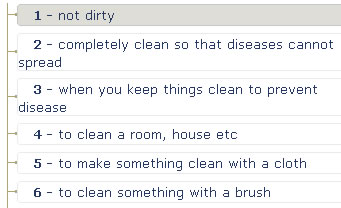
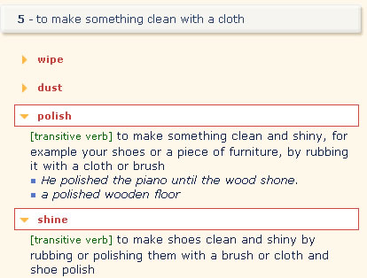

Suppose you had your shoes cleaned this morning, and you wanted to tell your English class about it.
You can look up CLEAN (a word that you probably already know) in alphabetical order in the Activator. Do this by typing in the search box or by scrolling through the sliding Activator index.
There you will see that there are 8 sections of meanings. You need to read through these and find the one that most closely matches what you are trying to express. Number one is 'not dirty.' Since you want to talk about the action of cleaning your shoes, this one isn't correct. Keep reading. You will see at number 5 that ' to make something clean with a cloth' is the best match.

Click on number 5 and you will see there are four choices for words that match this meaning. Click to open each of them and see which one best applies here.

The definitions for polish and shine both refer to shoes, so either word could be used when describing your experience to the class.
See also: